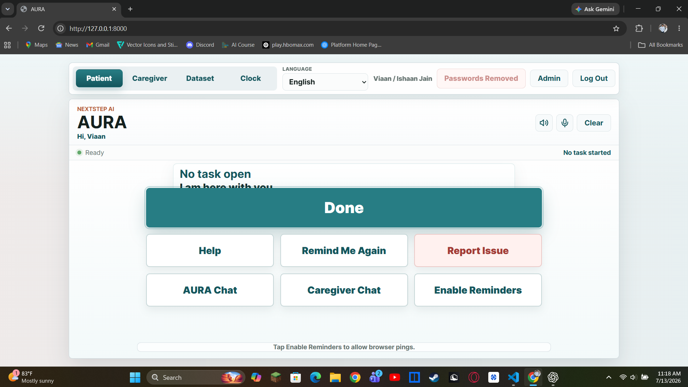

Patient guidance
Simple reminders, one step at a time, with clear ways to finish a task or ask for help.
AI for daily independence
A daily routine assistant that supports patients and gives caregivers clearer, data-informed insight.
01
Daily routines can become difficult to remember and complete, while caregivers often lack a simple way to understand where support is most needed.
02
Help users stay independent through calm, step-by-step guidance while turning routine activity into useful caregiver insights.
How it works
Simple reminders, one step at a time, with clear ways to finish a task or ask for help.
Routine planning, alerts, direct chat, activity history, and understandable performance summaries.
Per-user records reveal patterns in task completion, reminders, help requests, and time of day.
Built application
AURA separates patient and caregiver workflows so each person sees the information and actions they need.

Project direction
AURA explores how AI can protect patient independence while reducing repetitive caregiver work, without replacing human judgment or professional care.
About me
Student. Builder. Purpose-driven problem solver.
01
My name is Ishaan Jain, and I am a ninth-grade student at Lane Tech College Prep High School in Chicago. I developed AURA through the AI Fellowship for Global Young Innovators, a program under The Innovation Story, with guidance from my mentor, Ashutosh Iwale. AURA is an AI-powered daily routine and caregiver insight system designed to support individuals with early-stage dementia. The project helps users complete everyday activities through simple reminders and step-by-step guidance, while allowing caregivers to create routines, monitor task performance, review workload placed on caregivers.
School
Chicago, Illinois
Program
The Innovation Story
Focus
Technology that supports independence and care
What drives me
I want to build technology that solves real problems, respects the people who use it, and makes support more personal and accessible.